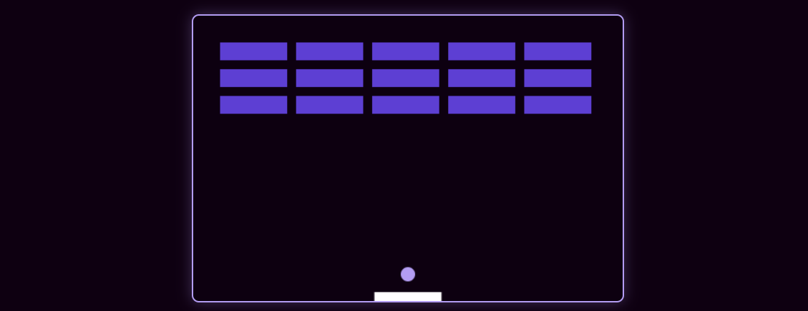
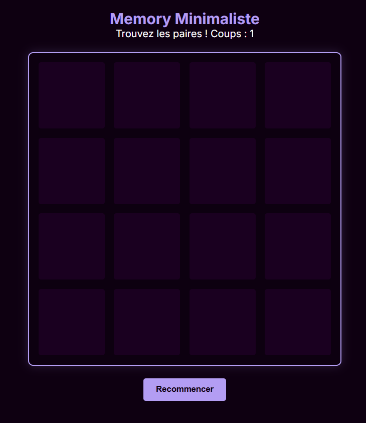

L'essence du projet
Le Creative Coding est pour moi un terrain d'expérimentation sans fin. Ce projet personnel regroupe plusieurs mini-jeux simples développés entièrement en code pur (Vanilla JS). L'idée est d'allier logique de programmation et design d'interface pour créer des expériences courtes mais engageantes.
La démarche technique
Chaque jeu est un défi : manipuler le DOM, gérer les collisions, ou encore créer des systèmes de score. J'ai voulu garder une esthétique minimaliste pour que le joueur se concentre sur le gameplay, tout en respectant l'univers visuel sombre et contrasté de mon portfolio.
Jeu n°1 : Le Casse-Brique

Arcade / JSUne réinterprétation moderne du classique.
Jeu n°2 : Memory Visuel

Puzzle / LogiqueUn jeu de cartes memory basé sur des lettres.
Apprentissage
Développer ces jeux m'a permis d'améliorer mes bases en JavaScript et de comprendre l'importance de l'expérience utilisateur (UX) dans le design interactif.